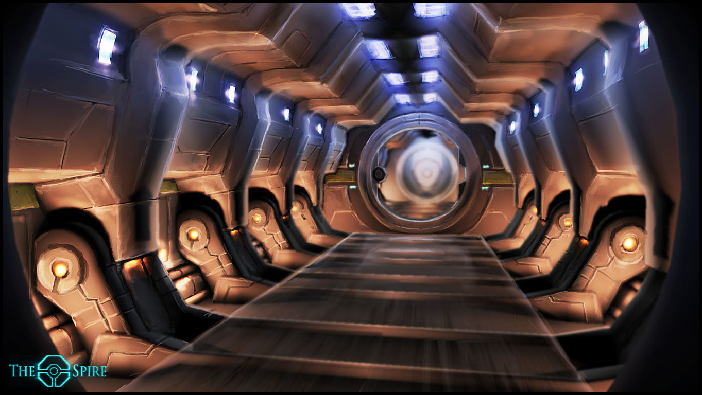
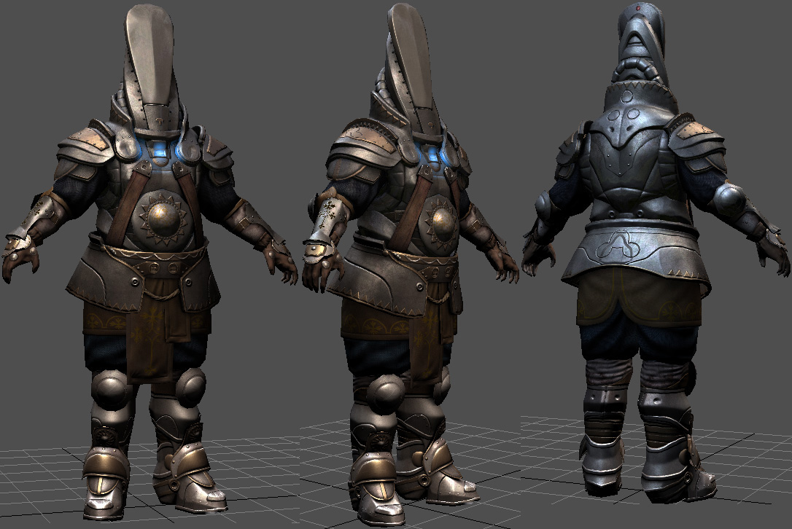

Here is a spaceship model I made in MS paint using only a keyboard. It would have been up much better, but I only had 3 minutes. Overall, I think it really shows my passion for spaceships and concept art.

Robo-Knight Model
Here is a model of a robot knight I made with watercolors. This was done with me throwing watercolor paints at a canvas. It just eventually turned out like this after throwing paint for maybe 5 minutes.
